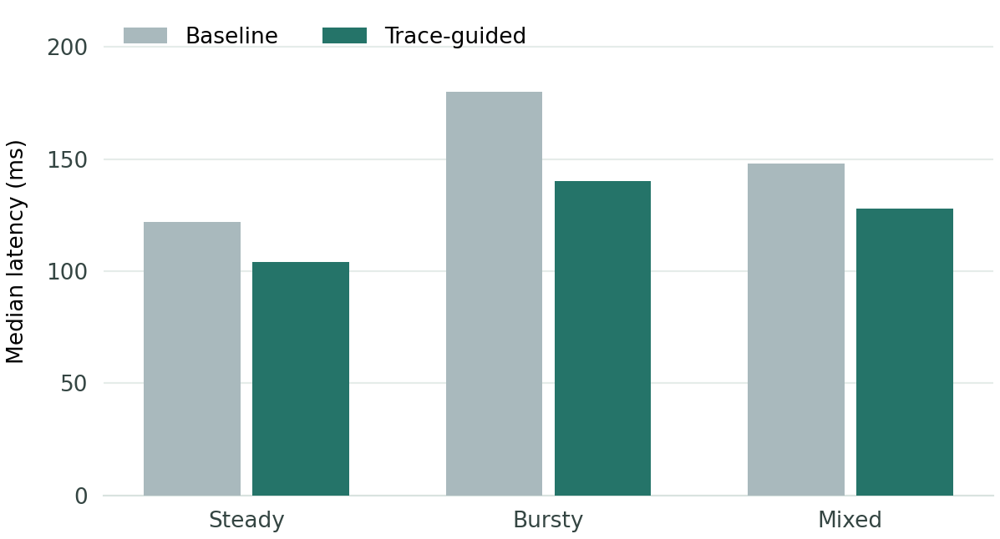

QueueLens
A trace replay harness that compares scheduling policies for data pipelines under repeatable workloads.

Aster Vale Institute of Technology
I study computer science and build tools that make large-scale experiments easier to reproduce. My interests include distributed systems and performance measurement.
A trace replay harness that compares scheduling policies for data pipelines under repeatable workloads.

Aster Systems Workshop 2026